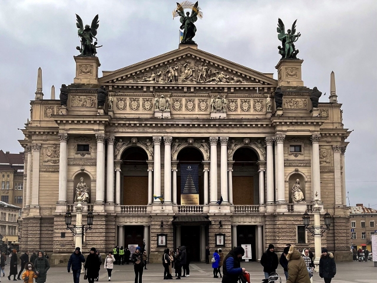

Дата і місце народження: 14 грудня 2003 року, місто Донецьк
Освіта:
Амвросіївська ЗОШ І-ІІІ ступенів №2,Хобі:
Улюблені книги та фільми:
Вподобане місто
Львів - одне з найстаріших міст України, і його історія налічує понад 700 років. Місто було засноване у 1256 році князем Данилом Галицьким і назване на честь його сина Лева. Протягом віків Львів був важливим культурним, торговим і політичним центром. Він пережив численні історичні перипетії, включаючи періоди польської, австрійської та радянської влади.
Місто славиться своєю унікальною архітектурною спадщиною, яка поєднує в собі стилі ренесансу, бароко, готики та інших епох. Однією з найвідоміших архітектурних пам'яток є площа Ринок, яка є включена до списку світової спадщини ЮНЕСКО.
Сьогодні Львів - це динамічне місто з багатою культурною сценою, університетами, музеями і живою гастрономічною сценою. Воно також відоме своєю гостинністю та теплим прийомом для туристів з усього світу. Львів - це місто, де сучасність зливається з історією, створюючи унікальну атмосферу, яка завжди приваблює подорожніх.
Докладніше про це місто можна дізнатися тут.